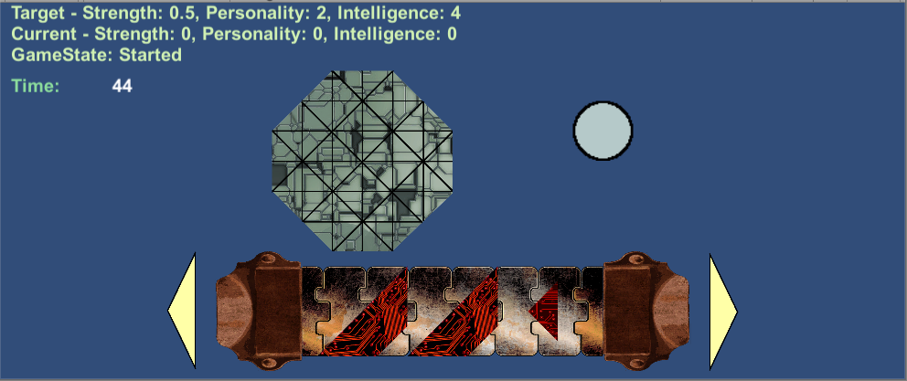

As part of the Progressive Game Jam by Square One Clubs in Sacramento, we developed a game pitch for a robot assembly puzzle game. The idea was for the player to be an unpaid intern working for the Bright Bot Inc. company, developing microprocessors for civil service robots. They would be presented with an assembly line where they are tasked with designing a plethera of service robots by assembling their "brain" using pieces associated with different colors. Each piece color associated with an applifier that enhanced that robot's ability to perform a task in a particular cataegory: Red for Strength, Yellow for Personality, and Blue for Intellegence. Additionally, each piece has a shape to it which provided a challenge for the player to place it on the hexagon shaped head. Putting that all together, we had the idea for a puzzle game played on the concepts of color, shape, and piece management.
<Sprint 1: Initial Design>When we started all we had was an idea and a photoshoped mockup of what the basic shapes would look like.
Item drop and pickup
As the core mechanic of the game, we gave developed simple color and shape themed spirits called pieces for the player to interact with. Clicking and holding down the left mouse button a player can pickup and move a piece, while the right mouse button rotates the piece 90 degrees.
rotationShape() {
dragging = true; //Boolean to determine if a draggable piece is moving.
dragDegree = gameobject; //An abstraction gameobject, allowing us to modify the piece indirectly.
transform.Rotate(0,0,90); //Uses 90 degrees to allow proper lining up of the grid.
}
makeDrag() {
dragging = true; //Boolean to determine if a draggable piece is moving.
dragDegree = gameobject; //An abstraction gameobject, allowing us to modify the piece indirectly.
dragDegree.GetComponent().sortingLayerName = "DraggingPiece"; //Gets the spirit render of the selected piece to allow it to visually move the spirit.
oldPosition = transform.position; //Whereever the mouse drops the piece on the screen, it will place the piece there.
oldRotation = transform.rotation; //Whereever rotation the player leaves the piece in, it will leave it that way.
}
To prevent pieces from cluttering the screen, we made it so that if a piece does not fit or is near the hexagon, the piece will reset to its original position known as the conveyor.
It is only when a piece is placed on the hexagon without collision with other pieces that then gets placed.
CheckConveyorCollision() {
ContactFilter2D filter = new ContactFilter2D();
filter.useLayerMask = true;
filter.SetLayerMask(LayerMask.NameToLayer("Piece"));
//Collision handling
Collider2D c = GetComponent<Collider2D>();
Collider2D[] results = new Collider2D[5];
c.OverlapCollider(filter, results);
foreach(Collider2D collider in results){
if(collider == null) continue;
if(collider.tag == "Tray") return true; If there is no collision with other pieces.
}
return false; If there is collision with other pieces.
}
By the end of this phase we were able to allow players to pick up, rotate pieces, and place them onto a hexagon board to demonstrate a proof of concept before futher developing the game.
Sprint 2: Piece spawning and score counting
A common problem we found with the initial playtests of the levels was managing a wide range of pieces on a limited screen space.
Additionally, we needed to devise a way to generating various board requirements so that we did not need to hardcode each level.
If each piece took up a proportion of the screen, then generally there wouldn't be much room for user interface options and made the amount of puzzles that could be setup limited.
In this phase part of our team were able to design a conveyor belt mechanic which allowed us to display for larger quantities of pieces for the levels.
When a player begins a level they are presented with a conveyhor belt holding three pieces with adjacent buttons to move the conveyor along, showing more pieces.
Each piece is generated upon the start of the game but is hidden from sight if it is not at the front of the conveyor belt.
Additionally, we were able to associate pieces with scores based on their shape and color to vary up the combinations needed to complete a level.
Our first milestone.